Super Talents는 World 7의 메카닉으로, 클래스 탤런트를 추가로 50레벨 높여줍니다. 슈퍼 탤런트는 캐릭터 레벨에 의해 제한되므로, 이 가이드에서는 모든 클래스와 활동(전투/스킬링)에 따른 최적의 슈퍼 탤런트를 추천하고, 초기 50레벨을 넘어 올리는 방법도 설명합니다.
최적 Super Talents 우선순위
아래 상위 5개 슈퍼 탤런트 추천은 가장 높은 효과를 기준으로 전투와 스킬링으로 나뉘며, 왼쪽부터 오른쪽 순으로 우선순위가 높습니다. 아래 나열된 탤런트들 이외의 것들은 대부분 슈퍼 탤런트 부스트에서 낮은 스케일을 보이지만, 추가 슈퍼 탤런트 포인트를 얻으면 업그레이드할 수 있습니다.
슈퍼 탤런트 초기화가 쉬우므로 다른 탤런트들이 캐릭터의 데미지나 스킬링에 미치는 효과를 직접 실험해보거나, 필요에 따라 아래에 없는 특화 옵션(예: Barbarian 요리 또는 파밍)으로 교체하는 것을 권장합니다.
최적 Super Talents (전투)
| 기본 클래스 (경로) | 슈퍼 탤런트 1 | 슈퍼 탤런트 2 | 슈퍼 탤런트 3 | 슈퍼 탤런트 4 | 슈퍼 탤런트 5 |
|---|---|---|---|---|---|
| Warrior (Barbarian) |  Graveyard Shift (Death Bringer) Graveyard Shift (Death Bringer) |
 Dank Ranks (Death Bringer) Dank Ranks (Death Bringer) |
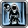 Wraith Overlord (Death Bringer) |
 Charred Skulls (Blood Berserker) Charred Skulls (Blood Berserker) |
 Monster Decimator (Barbarian) Monster Decimator (Barbarian) |
| Warrior (Squire) | 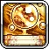 Orb Of Remembrance (Divine Knight) |
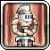 Knightly Disciple (Divine Knight) |
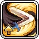 Mega Mongorang (Divine Knight) |
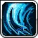 Shockwave Slash (Squire) |
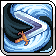 Daggerang (Squire) |
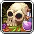 Cranium Cooking (Shaman) |
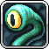 Tenteyecle (Shaman) |
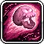 Arcane Skulls (Arcane Cultist) |
 Arcane Crystals (Arcane Cultist) Arcane Crystals (Arcane Cultist) |
 Backup Energy (Arcane Cultist) Backup Energy (Arcane Cultist) |
|
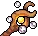 Mage (Wizard) |
Dimensional Wormhole (Elemental Sorcerer) |  Radiant Chainbolt (Elemental Sorcerer) Radiant Chainbolt (Elemental Sorcerer) |
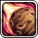 Meteor Shower (Elemental Sorcerer) |
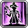 Wormhole Emperor (Elemental Sorcerer) |
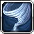 Tornado (Wizard) |
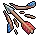 Archer (Bowman) |
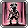 Archlord Of The Pirates (Siege Breaker) |
 Pirate Flag (Siege Breaker) Pirate Flag (Siege Breaker) |
Suppressing Fire (Siege Breaker) | Homing Arrows (Bowman) |  Stacked Skulls (Siege Breaker) Stacked Skulls (Siege Breaker) |
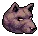 Archer (Hunter) |
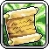 Some Commandments (Wind Walker) |
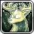 Eternal Hunt (Wind Walker) |
 Spirit Ballista (Wind Walker) Spirit Ballista (Wind Walker) |
Whale Wallop (Beast Master) | Compass (Wind Walker) |
| One Step Ahead (Maestro) | Void Trial Rerun (Voidwalker) | Void Radius (Voidwalker) | 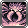 Bossing Vain (Voidwalker) |
Cmon Out Crystals (Journeyman) |
최적 Super Talents (스킬링)
| 기본 클래스 (경로) | 슈퍼 탤런트 1 | 슈퍼 탤런트 2 | 슈퍼 탤런트 3 | 슈퍼 탤런트 4 | 슈퍼 탤런트 5 |
|---|---|---|---|---|---|
| Warrior (Barbarian) | 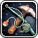 Brute Efficiency (Warrior) |
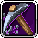 Big Pick (Warrior) |
Dank Ranks (Death Bringer) |
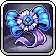 Ribbon Winning (Death Bringer) |
 Tool Proficiency (Warrior) Tool Proficiency (Warrior) |
| Warrior (Squire) | Brute Efficiency (Warrior) | Big Pick (Warrior) |  Redox Rates (Squire) Redox Rates (Squire) |
Tool Proficiency (Warrior) |
 'Str'Ess Tested Garb (Warrior) 'Str'Ess Tested Garb (Warrior) |
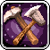 Smart Efficiency (Mage) |
Log on Logs (Mage) |  Essential Essence (Arcane Cultist) Essential Essence (Arcane Cultist) |
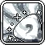 Passion of the Summon (Arcane Cultist) |
 Absolute Stardom (Arcane Cultist) Absolute Stardom (Arcane Cultist) |
|
| Mage (Wizard) | Smart Efficiency (Mage) | Log on Logs (Mage) | 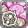 Shared Beliefs (Elemental Sorcerer) |
Leaf Thief (Mage) | Unt'wis'ted Robes (Mage) |
| Archer (Bowman) | 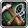 Elusive Efficiency (Archer) |
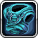 Garb Of Un'agi'ng Quality (Archer) |
 Teleki'net'ic Logs (Bowman) Teleki'net'ic Logs (Bowman) |
 Briar Patch Runner (Bowman) Briar Patch Runner (Bowman) |
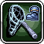 Skill Ambidexterity (Siege Breaker) |
| Archer (Hunter) | Elusive Efficiency (Archer) |  Eagle Eye (Hunter) Eagle Eye (Hunter) |
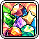 Generational Gemstones (Wind Walker) |
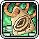 Price Recession (Wind Walker) |
Sneaky Skilling (Wind Walker) |
| One Step Ahead (Maestro) | 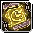 Printer Go Brrr (Maestro) |
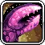 Left Hand of Learning (Maestro) |
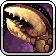 Right Hand of Action (Maestro) |
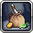 Extra Bags (Beginner) |
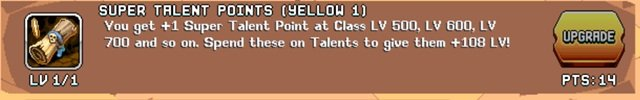
Super Talents 잠금 해제 & 부스트
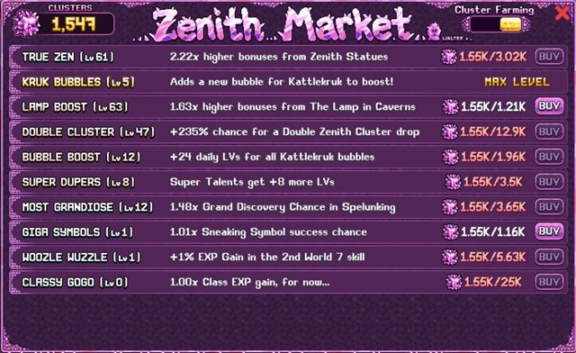
- 잠금 해제: Super Talents는 World 7 마을의 Whallamus에서 Legend Talent 포인트(Yellow 1) 1개를 사용해 잠금 해제하며, 처음에는 탤런트 레벨 50을 추가로 부여합니다. 캐릭터 레벨 500에서 슈퍼 탤런트 포인트 1개를 얻고, 이후 100레벨마다 추가로 얻으며, 이는 각 탤런트 프리셋마다 별도로 적용됩니다.
- 초기화: 슈퍼 탤런트는 일반 탤런트와 동일한 방법으로 초기화할 수 있습니다. 탤런트를 마우스로 길게 누르거나 손가락으로 길게 누르면 됩니다(Upgrade Vault를 통해 잠금 해제된 경우) 또는 탤런트 포인트 초기화 포션을 통해 가능합니다.
- Yellow 2 부스트: Whallamus에서 Yellow 2 레전드 탤런트를 구매해 초기 탤런트 부스트를 50에서 100까지 높일 수 있습니다.
- Zenith Statue 부스트: Zenith Statue 기념비에서 추가 탤런트 부스트를 받을 수 있습니다.